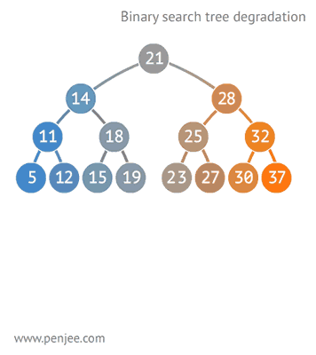

原文连接:https://www.cnblogs.com/godoforange/p/11618643.html
高强度训练第十八天总结:
二叉查找树：
二叉查找树就是左结点小于根节点，右结点大于根节点的一种排序树，也叫二叉搜索树。也叫BST，英文Binary Sort Tree。
就长下面这吊样
查找步骤
在二叉搜索树b中查找x的过程为：
若b是空树，则搜索失败，否则：
若x等于b的根节点的数据域之值，则查找成功；否则：
若x小于b的根节点的数据域之值，则搜索左子树；否则：
查找右子树。

二叉搜索树的构造

往BST中插入元素

BST转成有序数组

二叉查找树比普通树查找更快，查找、插入、删除的时间复杂度为O（logN）。但是二叉查找树有一种极端的情况，就是会变成一种线性链表似的结构。此时时间复杂度就变味了O（N），为了解决这种情况，出现了二叉平衡树。
平衡二叉树
平衡二叉树全称平衡二叉搜索树，也叫AVL树。是一种自平衡的树。
AVL树也规定了左结点小于根节点，右结点大于根节点。并且还规定了左子树和右子树的高度差不得超过1。这样保证了它不会成为线性的链表。AVL树的查找稳定，查找、插入、删除的时间复杂度都为O（logN），但是由于要维持自身的平衡，所以进行插入和删除结点操作的时候，需要对结点进行频繁的旋转。
一个有序数组被插入到平衡二叉树
右旋
我们知道，AVL树不仅是一颗二叉查找树，它还有其他的性质。如果我们按照一般的二叉查找树的插入方式可能会破坏AVL树的平衡性。同理，在删除的时候也有可能会破坏树的平衡性，所以我们要做一些特殊的处理，包括：单旋转和双旋转！
AVL树的插入，单旋转的第一种情况---右旋：
在插入之前树是一颗AVL树，而插入之后结点T的左右子树高度差的绝对值不再 < 1,此时AVL树的平衡性被破坏，我们要对其进行旋转。由上图可知我们是在结点T的左结点的左子树上做了插入元素的操作，我们称这种情况为左左情况，我们应该进行右旋转(只需旋转一次，故是单旋转)。具体旋转步骤是：
T向右旋转成为L的右结点，同时，Y放到T的左孩子上。这样即可得到一颗新的AVL树，旋转过程图如下：
另一个：
以上就是插入操作时的单旋转情况！我们要注意的是：谁是T谁是L，谁是R还有谁是X,Y,Z!T始终是开始不平衡的左右子树的根节点。显然L是T的左结点，R是T的右节点。X、Y、Y是子树当然也可以为NULL.NULL归NULL，但不能破坏插入时我上面所说的左左情况或者右右情况。
AVL树的插入，双旋转的第一种情况---左右(先左后右)旋
我们在T结点的左结点的右子树上插入一个元素时，会使得根为T的树的左右子树高度差的绝对值不再 < 1，如果只是进行简单的右旋，得到的树仍然是不平衡的。我们应该按照如下图所示进行二次旋转：
左右旋转
AVL树的插入，双旋转的第二种情况---右左(先右后左)旋：
由上图可知，我们在T结点的右结点的左子树上插入一个元素时，会使得根为T的树的左右子树高度差的绝对值不再 < 1，如果只是进行简单的左旋，得到的树仍然是不平衡的。我们应该按照如下图所示进行二次旋转：
AVL树每一个节点只能存放一个元素，并且每个节点只有两个子节点。当进行查找时，就需要多次磁盘IO，（数据是存放在磁盘中的，每次查询是将磁盘中的一页数据加入内存，树的每一层节点存放在一页中，不同层数据存放在不同页。）这样如果需要多层查询就需要多次磁盘IO。为了解决AVL树的这个问题，就出现了B树。但是在学B树之前，我们需要看一下多路查找树。
多路查找树
多路查找树的每一个节点的孩子树可以多于两个，且每个节点处可以存储多个元素。多路查找树是一种特殊的查找树，所以其元素之间存在某种特定的排序关系。
2-3树
定义2-3树中每一个节点都具有两个孩子(我们称它为2节点)或三个孩子(我们称它为3节点)。
- 一个2节点包含一个元素和两个孩子(只能包含两个孩子或没有孩子，不能出现有一个孩子的情况)，且与二叉排序树类似，左子树包含的元素小于该元素，右子树包含的元素大于该元素。
一个3节点包含一小一大两个元素和三个孩子(只能包含三个孩子或没有孩子，不能出现有一个孩子或有两个孩子的情况)。如果某个3节点有孩子，左子树包含小于较小元素的元素，右子树包含大于较大元素的元素，中间子树包含介于两元素之间的元素。
一颗完美平衡的2-3查找树中的所有空链接到根结点的距离都是相同的。查找
要判断查找的键值是否在树中，我们先将它和根结点中的键比较。如果它和其中的任何一个相等，查找命中。否则我们就根据比较的结果找到指向相应区间的链接，并在其指向的子树中递归地继续查找。如果这是个空链接，查找未命中。
2-3树的插入实现
要在2-3树中插入一个新结点，我们可以和二叉查找树一样先进行一次未命中的查找，然后把新结点挂在树的底部。但这样的话树无法保持完美平衡性。我们使用2-3树的主要原因就在于它能够在插入之后继续保持平衡。
2-3树插入可以分为三种情况
- 对于空树，插入一个2节点即可
- 插入节点到一个2节点的叶子上
由于其本身只有一个元素，所以只需要将其升级为3节点即可。
往3节点中插入一个新数据
因为3节点本省就是2-3树的最大容量(已经有两个元素)，因此需要拆分。分情况讨论如下所示：只有一个3-结点的树，向其插入一个新键
这棵树唯一的结点中已经没有可插入的空间了。我们又不能把新键插在其空结点上（破坏了完美平衡）。为了将新键插入，我们先临时将新键存入该结点中，使之成为一个4-结点。创建一个4-结点很方便，因为很容易将它转换为一颗由3个2-结点组成的2-3树（如图所示），这棵树既是一颗含有3个结点的二叉查找树，同时也是一颗完美平衡的2-3树，其中所有空链接到根结点的距离都相等
向一个父节点为2节点的3节点中插入数据
假设未命中的查找结束于一个3-结点，而它的父结点是一个2-结点。在这种情况下我们需要在维持树的完美平衡的前提下为新键腾出空间。
我们先像刚才一样构造一个临时的4-结点并将其分解，但此时我们不会为中键创建一个新结点，而是将其移动至原来的父结点中。
这次转换并没有影响2-3树的主要性质，树仍然是有序的，因为中键被移动到父节点中去了。向一个父节点为3节点的3节点中插入数据
假设未命中的查找结束于一个3-结点，而它的父结点是一个3-结点。
我们再次和刚才一样构造一个临时的4-结点并分解它，然后将它的中键插入它的父结点中。但父结点也是一个3-结点，因此我们再用这个中键构造一个新的临时4-结点，然后在这个结点上进行相同的变换，即分解这个父结点并将它的中键插入到它的父结点中去。
我们就这样一直向上不断分解临时的4-结点并将中键插入更高的父结点，直至遇到一个2-结点并将它替换为一个不需要继续分解的3-结点，或者是到达3-结点的根。
B树(Blance-Tree)
B树，在写法上通常是B-树，这不是减号的意思，只是一种表达方式，它是一种能够存储数据、对数据进行排序并允许以O(log n)的时间复杂度运行进行查找、顺序读取、插入和删除的数据结构。，概括来说是一个节点可以拥有多于2个节点的二叉查找树。
一个m阶的B树具有如下特点：
- B树根节点至少有两个节点，每个节点可以有多个子树
- 每个中间节点都包含k-1个元素和k个子树，其中 m/2 ⇐ k ⇐ m
- 所有的叶子结点都位于同一层
- 每个节点中的元素从小到大排列，节点当中k-1个元素正好是k个孩子包含的元素的值域分划。
看概念还是挺晦涩的，直接放张图看看正宗的B树
5.每个节点中的元素从小到大排列，节点当中k-1个元素正好是k个孩子包含的元素的值域分划。

插入数据
插入的数据依次是6 10 4 14 5 11 15 3 2 12 1 7 8 8 6 3 6 21 5 15 15 6 32 23 45 65 7 8 6 5 4
，效果图如下：

B+树
B+树是对B树的一种变形树，它与B树的差异在于：
- 有k个子结点的结点必然有k个关键码；
- 非叶结点仅具有索引作用，跟记录有关的信息均存放在叶结点中。
- 树的所有叶结点构成一个有序链表，可以按照关键码排序的次序遍历全部记录。

插入数据如下所示：

B和B+树的区别在于，B+树的非叶子结点只包含导航信息，不包含实际的值，所有的叶子结点和相连的节点使用链表相连，便于区间查找和遍历。
B+ 树的优点在于：
- 由于B+树在内部节点上不好含数据信息，因此在内存页中能够存放更多的key。 数据存放的更加紧密，具有更好的空间局部性。因此访问叶子几点上关联的数据也具有更好的缓存命中率。
- B+树的叶子结点都是相链的，因此对整棵树的便利只需要一次线性遍历叶子结点即可。而且由于数据顺序排列并且相连，所以便于区间查找和搜索。而B树则需要进行每一层的递归遍历。相邻的元素可能在内存中不相邻，所以缓存命中性没有B+树好。
但是B树也有优点，其优点在于，由于B树的每一个节点都包含key和value，因此经常访问的元素可能离根节点更近，因此访问也更迅速。下面是B 树和B+树的区别图：

为什么说B+树比B树更适合数据库索引？
B+树的磁盘读写代价更低：B+树的内部节点并没有指向关键字具体信息的指针，因此其内部节点相对B树更小，如果把所有同一内部节点的关键字存放在同一盘块中，那么盘块所能容纳的关键字数量也越多，一次性读入内存的需要查找的关键字也就越多，相对IO读写次数就降低了。
B+树的查询效率更加稳定：由于非终结点并不是最终指向文件内容的结点，而只是叶子结点中关键字的索引。所以任何关键字的查找必须走一条从根结点到叶子结点的路。所有关键字查询的路径长度相同，导致每一个数据的查询效率相当。
由于B+树的数据都存储在叶子结点中，分支结点均为索引，方便扫库，只需要扫一遍叶子结点即可，但是B树因为其分支结点同样存储着数据，我们要找到具体的数据，需要进行一次中序遍历按序来扫，所以B+树更加适合在区间查询的情况，所以通常B+树用于数据库索引。
B树在提高了IO性能的同时并没有解决元素遍历的我效率低下的问题，正是为了解决这个问题，B+树应用而生。B+树只需要去遍历叶子节点就可以实现整棵树的遍历。而且在数据库中基于范围的查询是非常频繁的，而B树不支持这样的操作或者说效率太低。
红黑树：
红黑树也叫RB树，RB-Tree。是一种自平衡的二叉查找树，它的节点的颜色为红色和黑色。它不严格控制左、右子树高度或节点数之差小于等于1。也是一种解决二叉查找树极端情况的数据结构。
红黑树规定了：
节点是红色或黑色。
根节点是黑色。
每个叶子节点都是黑色的空节点（NIL节点）。
每个红色节点的两个子节点都是黑色。也就是说从每个叶子到根的所有路径上不能有两个连续的红色节点)。
从任一节点到其每个叶子的所有路径都包含相同数目的黑色节点。
红黑树在查找方面和AVL树操作几乎相同。但是在插入和删除操作上，AVL树每次插入删除会进行大量的平衡度计算，红黑树是牺牲了严格的高度平衡的优越条件为代价，它只要求部分地达到平衡要求，结合变色，降低了对旋转的要求，从而提高了性能。红黑树能够以O(log2 n)的时间复杂度进行搜索、插入、删除操作。此外，由于它的设计，任何不平衡都会在三次旋转之内解决。
相比于BST，因为红黑树可以能确保树的最长路径不大于两倍的最短路径的长度，所以可以看出它的查找效果是有最低保证的。在最坏的情况下也可以保证O(logN)的，这是要好于二叉查找树的。因为二叉查找树最坏情况可以让查找达到O(N)。
红黑树的算法时间复杂度和AVL相同，但统计性能比AVL树更高，所以在插入和删除中所做的后期维护操作肯定会比红黑树要耗时好多，但是他们的查找效率都是O(logN)，所以红黑树应用还是高于AVL树的. 实际上插入 AVL 树和红黑树的速度取决于你所插入的数据.如果你的数据分布较好,则比较宜于采用 AVL树(例如随机产生系列数),但是如果你想处理比较杂乱的情况,则红黑树是比较快的。
红黑树广泛用于TreeMap、TreeSet，以及jdk1.8后的HashMap(hash冲突链表超过8就转换成红黑树)。
参考：
https://www.cnblogs.com/jiqing9006/p/5873097.html
https://blog.csdn.net/wanderlustLee/article/details/81297253
https://www.cnblogs.com/zhuwbox/p/3636783.html
https://www.cnblogs.com/lishanlei/p/10707791.html
https://www.cnblogs.com/yangecnu/p/Introduce-B-Tree-and-B-Plus-Tree.html